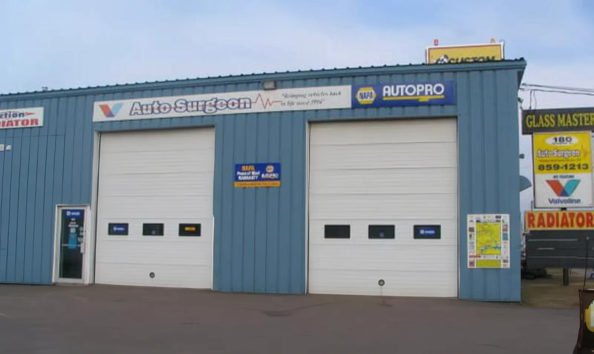
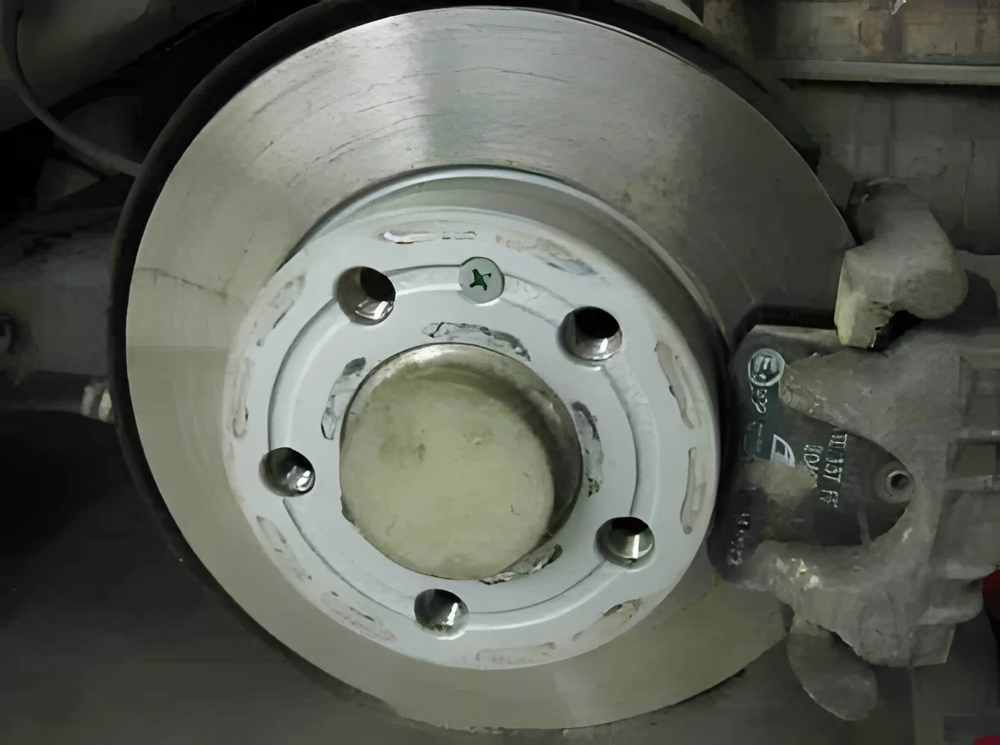
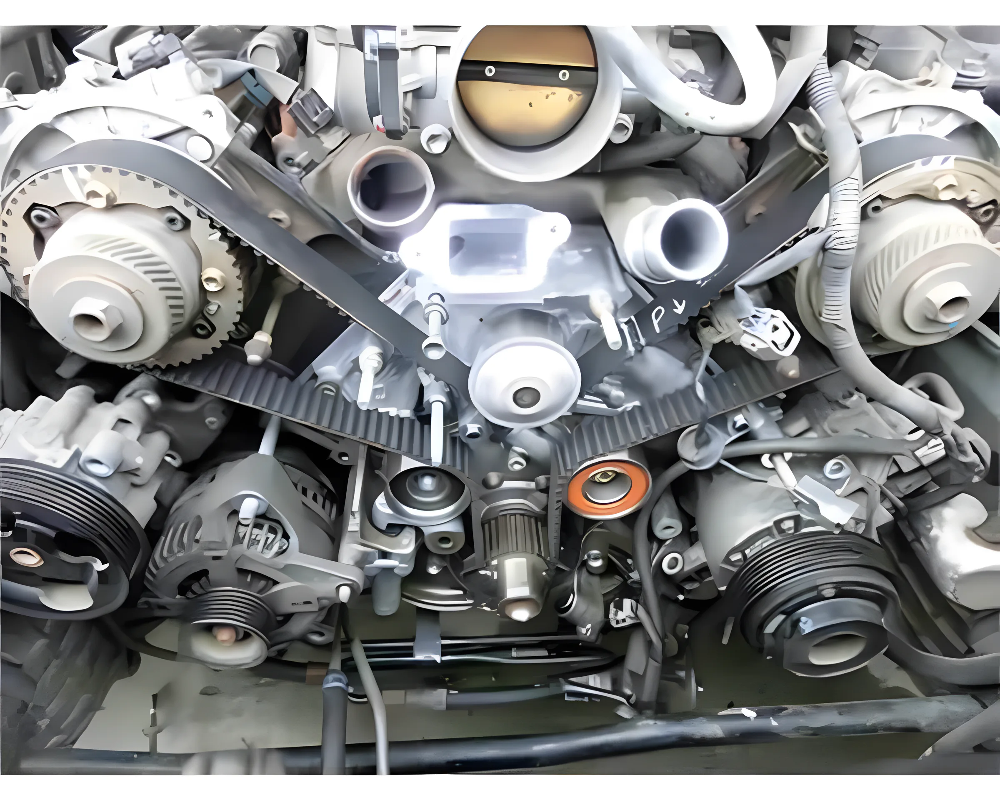
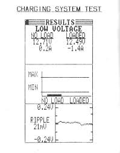
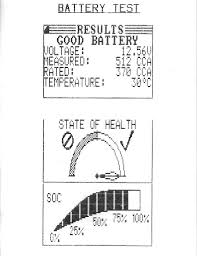
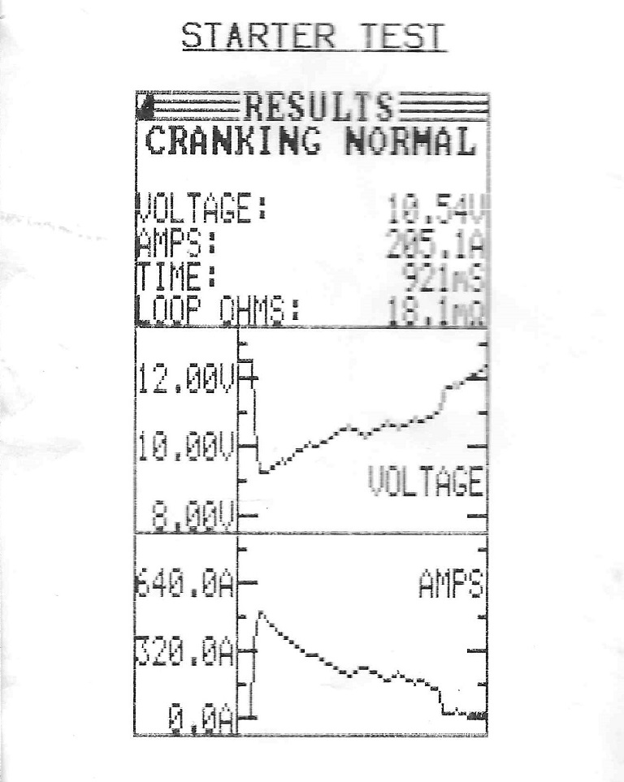
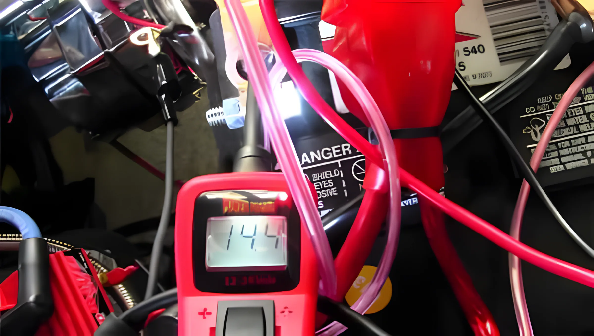

AutoSurgeon
Bringing vehicles back to life since 1994.
Diagnostics, repairs, maintenance and New Brunswick safety inspections for cars and light trucks. Domestic and import. Jeff Hurd and the shop at 180 Collishaw Street, Moncton.

From Jeff
“I've been fixing cars for a living since 1979. If you are at the end of your rope, I can help. If I can't fix it, you pay nothing.”
Jeff Hurd Mechanic and owner
- ASECertified Master Technician
- JourneymanLicensed Journeyman, Interprovincial Standard
- 11Certificates in automotive electrical and mechanical repair
- 1979Started at the dealersFord, Chrysler, AMC, Jeep and Renault
- 1994Opened Auto SurgeonBought Custom Muffler in 2005
What we fix
From a simple oil change to the most complex electrical nightmare. North American, Asian and European vehicles, with a speciality in BMW, Mercedes and Volkswagen.
01NB safety inspectionWe are a Licensed Motor Vehicle Inspection Station
Provincial safety inspections done here in the shop. If something needs fixing to pass, you get a clear estimate first, and no repairs are done without your authorization.
02Oil change and new-car maintenanceManufacturer approved, so your warranty stays good
- Lube, oil and filter
- Preventive maintenance inspection
- Authorized new car service facility
- Coolant, transmission, brake and power steering fluid service
- Fuel injection flush
03Electrical and diagnosticsBattery, starting, charging, computer systems, no-starts
- Diagnostic trouble codes
- Driveability problems
- PCM flash reprogramming
- Wiring faults, with factory schematics
- Alternators and starters
- TPMS, traction and stability control

04BrakesABS diagnosis, pads, rotors, drums and lines
Salt on Maritime roads rots bare rotors fast. The coated rotors we supply are EPA approved and carry up to three years warranty, and ceramic pads are what Jeff recommends for most cars, crossovers and SUVs.

05Timing beltsDue around 100,000 km on most engines
Most engines today are interference fit. If the belt breaks, the valves can hit the pistons and the repair costs three to four times more. Close to 100,000 km? Call and Jeff will check your car's replacement interval at no cost.

06Exhaust and mufflersCustom Muffler Centers, part of the shop since 2005
- Mufflers and pipes
- Custom exhaust systems
- Oxygen sensors
- Emission control diagnosis and repair
07Engine, cooling, A/C and fuelOverheating, oil leaks, tune-ups, turbos
- Engine diagnosis and repair
- Cylinder heads
- Water pumps and cooling systems
- Air conditioning
- Fuel systems
- Turbocharger diagnosis
- Diesel diagnosis
08Steering, suspension, drive train, tires2 and 4×4: transmissions, transfer cases, diffs
- Rack and pinion steering
- Wheel bearings and hubs
- Clutches and manual transmissions
- Four wheel drive diagnosis
- Tire sales and service
What gets fixed first
When your car needs more than one thing, we tell you in this order, so you can spend on what matters and plan the rest.
- 1
Safety
Always first.
- 2
Progressive damage
Work that, if it's left, will cause other parts to fail.
- 3
Recommended maintenance
What keeps the car safe, reliable and economical. We won't recommend work that doesn't benefit you or your vehicle.
A clear, accurate estimate before any work.
No repairs without your authorization.
Top quality parts. Fixed right the first time.
Minimum 12 months parts and labour warranty.
A ride to work or home if it's within 10 miles of the shop.
Same problem back within 12 months or 20,000 km? We fix it free.
The diagnostic bay
Jeff has put his money into the best diagnostic equipment and information systems he can get, so a fault gets found, not guessed at. That saves shop time, and it saves you money.
- Snap-on Verus Pro
- Scan tool with guided component tests.
- Midtronics EPS 1000 HD
- Battery, charging and starting tests, printed out.
- Smoke machine
- Pinpoints problems faster, saving shop time and your money.
- Power Probe
- With factory wiring diagrams, the quickest route to a wiring fault.
- Identifix and SureTrack
- Repair information that helps isolate a fault in any system.



From the bay




Find the shop
180 Collishaw St.
Moncton, NB E1C 9R3
Near the corner of Collishaw and Vaughan Harvey Blvd.
Open now| Monday | 9am – 6pm |
| Tuesday | 9am – 6pm |
| Wednesday | 9am – 6pm |
| Thursday | 9am – 6pm |
| Friday | 9am – 3pm |
| Saturday | Closed |
| Sunday | Closed |
Email jefftech@autosurgeon.ca · Fax 506 858 8212
We take Interac Direct Payment, Visa and Mastercard.